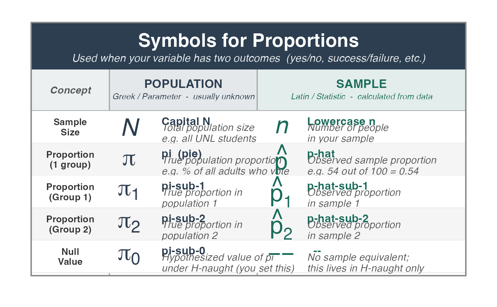
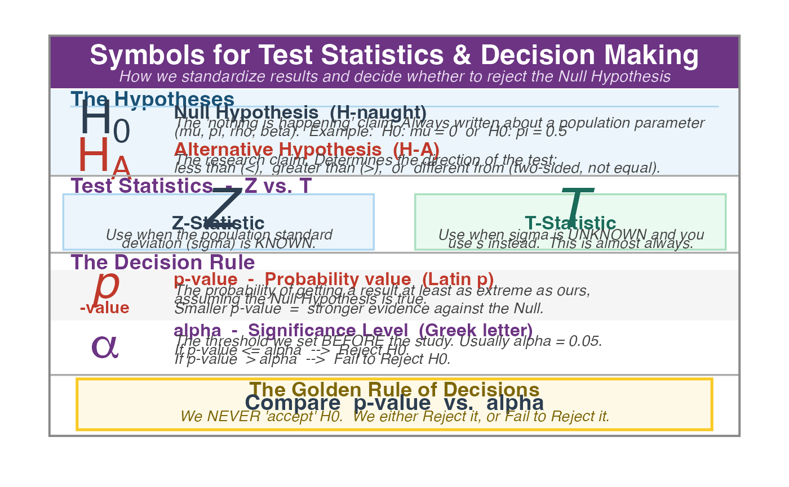
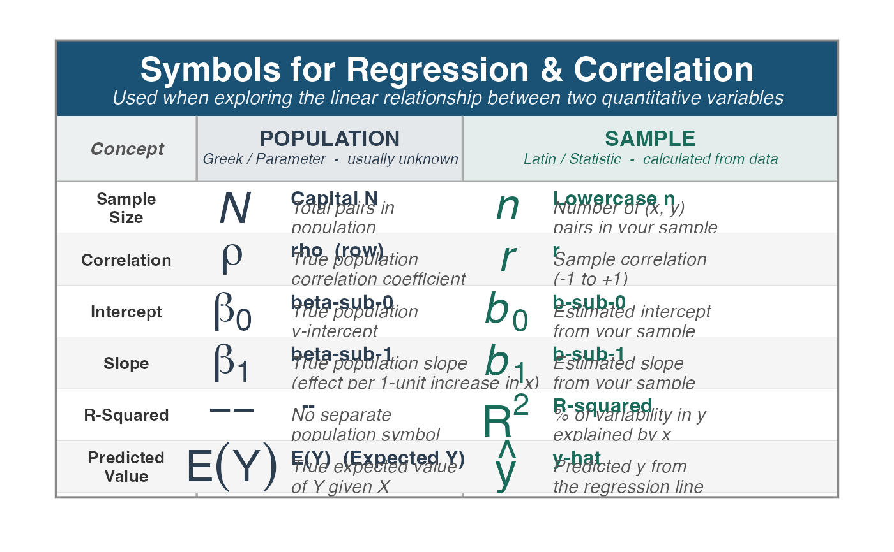
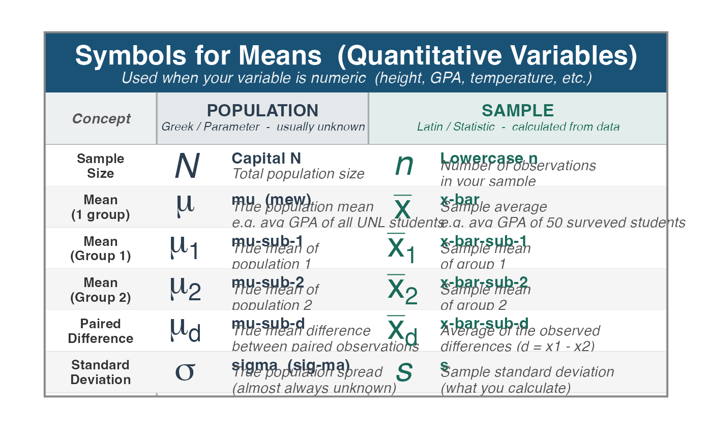
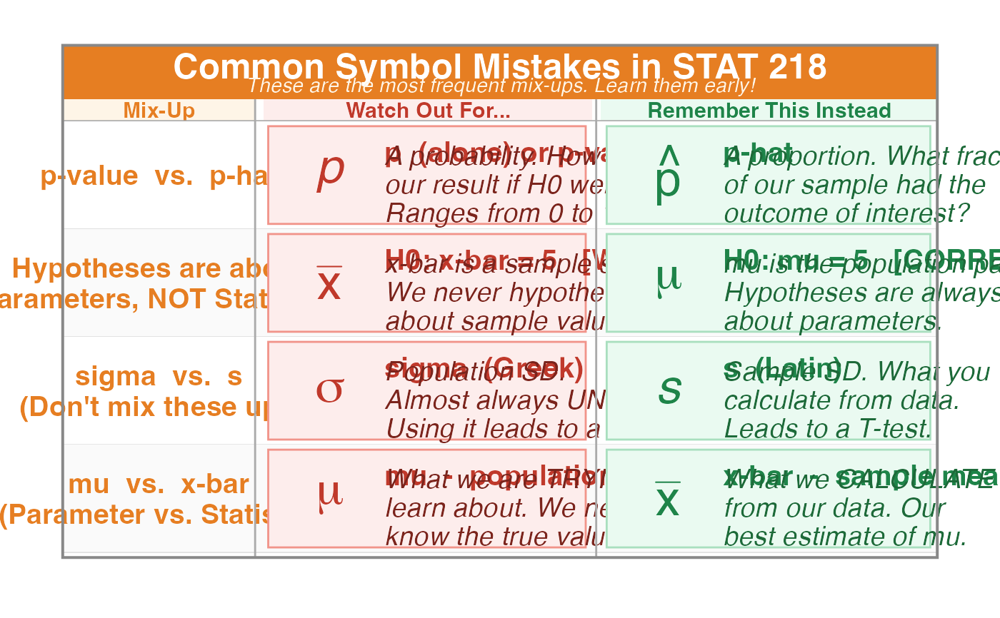

Renders one or more educational reference plots that display the statistical symbols used throughout STAT 218, organized by topic. Symbols are presented in a two-column layout contrasting Population (Greek/Parameter) symbols on the left with Sample (Latin/Statistic) symbols on the right.
When called with no arguments, all five plots are rendered sequentially into the RStudio plot viewer — use the left/right arrow buttons in the Plot tab to scroll between them.
Arguments
- topic
A character string specifying which symbol plot to display. Must be one of:
"all"Renders all five plots in sequence (default).
"proportions"Symbols related to proportions (pi, p-hat, etc.).
"means"Symbols related to means and quantitative variables.
"tests"Test statistics, decision-making symbols (Z, T, alpha, p-value).
"regression"Symbols for correlation and simple linear regression.
"mistakes"Common symbol mistakes students make in STAT 218.
Value
Invisibly returns NULL. The function is called for its side effect
of rendering plots to the active graphics device.
Details
The Core Idea: Greek vs. Latin
In statistics, Greek letters (mu, sigma, pi, rho, beta) refer to population parameters — true values that are usually unknown. Latin (English) letters (x-bar, s, p-hat, r, b) refer to sample statistics — values we actually calculate from our data.
The Five Themes
Proportions — categorical data, success/failure outcomes
Means — quantitative data, averages and spread
Test Statistics — standardized statistics and decision rules
Regression — linear relationships between two quantitative variables
Common Mistakes — frequent symbol confusions to avoid
See also
The main inference functions this package provides:
test_1prop(), ci_1prop(), test_2prop(), ci_2prop(),
test_1mean(), ci_1mean(), test_2mean(), ci_2mean(),
test_paired(), ci_paired(),
test_correlation(), test_regression()
Examples
# Show all symbol plots (scroll with arrows in RStudio Plot tab)
show_symbols()




 # Show only the proportions reference
show_symbols("proportions")
# Show only the proportions reference
show_symbols("proportions")
 # Show only the means reference
show_symbols("means")
# Show only the means reference
show_symbols("means")

# Show the common mistakes plot
show_symbols("mistakes")
